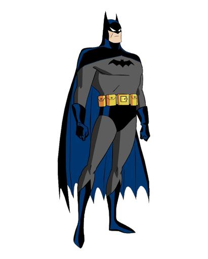
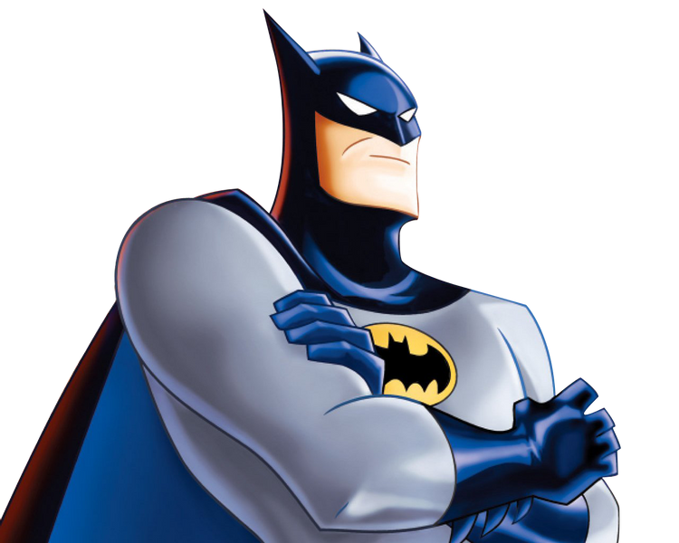
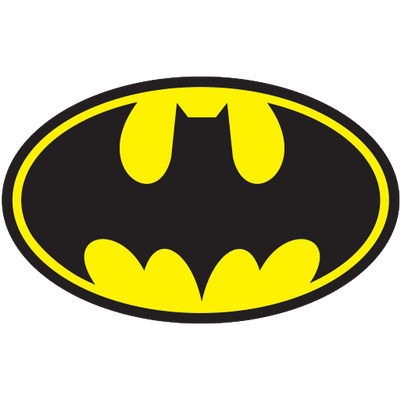

The Batman
The Joker:The Joker is perhaps one of Batman's oldest and most dedicated foes. A sadistic clown bent on chaotic nihilism and grinning death, despite having no obvious powers, he has presented more of a challenge to Batman over the years than any number of those more powerful or well-trained than himself. He is responsible for, among other things, the murder of the second Robin, Jason Todd, and the paralyzing of Batgirl, Barbara Gordon, who he made into a paraplegic. He is determined to drive Batman insane
The Penguin:Oswald Chesterfield Cobblepot is a short, round man with a long pointed nose, who fancies himself a gentleman of crime. He is also an enemy to Batman's civilian identity, since he blames the Waynes for the fall of his family. He usually wears a tuxedo, top hat, and monocle, and carries any variety of umbrellas which have various hidden functions such as vehicles or weapons. He sometimes gives Batman information in exchange for shorter sentences and to eliminate rivals.
Origin
Batman originated from an incident in Bruce's childhood; after witnessing the murder of his parents Dr. Thomas Wayne and Martha Wayne, he swore vengeance against criminals, an oath tempered by a sense of justice. Bruce trains himself physically and intellectually and crafts a bat-inspired persona to fight crime.

The Batman 1989 Trailer
The Dark Knight Trailer